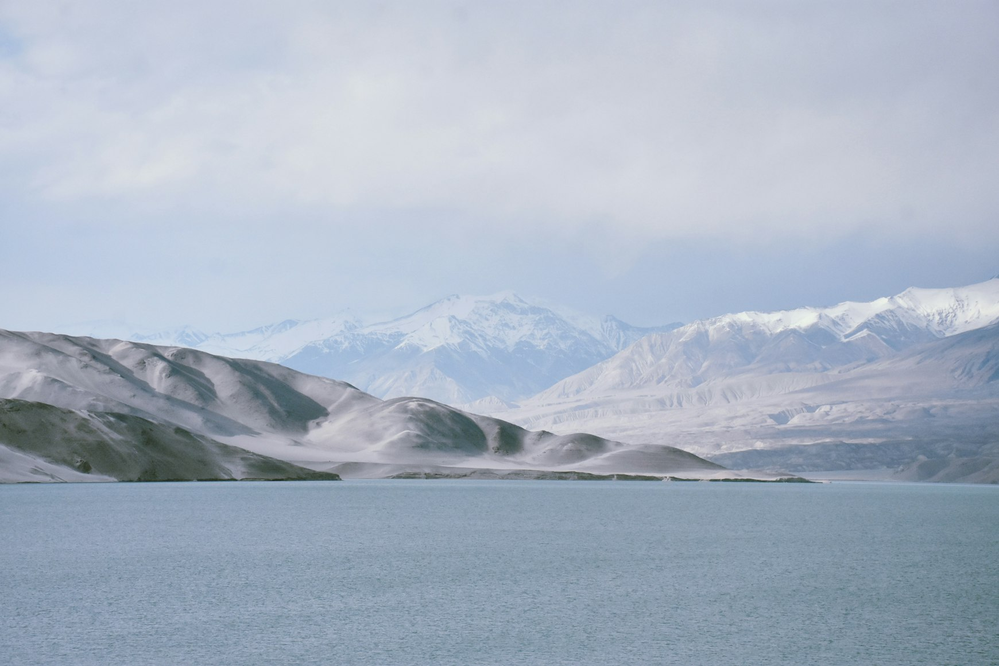

Old stone, cold wind, and the quiet roads of Lori.

Slow mornings in the highland villages of Bali.

Walking the lower valleys before the snow returns.


Faraway Postcards is an independent travel journal of long walks, quiet harbours, monsoon afternoons and the textures of distant coastlines. Stories written slowly, for travellers who prefer atmosphere over itinerary.